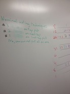
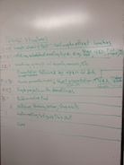
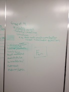
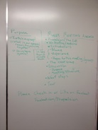

Humboldt Makers
This is the temporary website for the new Humboldt Makers' group while the group sorts itself out.
7/30/2013 Meeting Minutes
Location: Propelsion / The Link (1385 8th St, Arcata, CA )
Main Organizer: Lonny Grafman
Meeting Structure
- Intro to Propelsion / The Link
- Intro to 3D Printing / Arduino
- People Introductions
- Name
- Experience
- Hopes For This Meeting
- Update from "The Co-Op Group"
- Small Group Discussion
- Purpose of the Group/Meeting
- Meeting Structure
- Next Steps
- Tour
The meeting concluded with a nominal-voting-technique vote on future group meeting structure. The winning structure was:
- Meet twice per month; Short (~15 min) Presentation; Open Q&A (~30 min); Tinker Time
Images of the whiteboard at the meeting appear below.
   {kind=link}
{kind=link}
{kind=link}
{kind=link}
The people who were present registered on a sign-in sheet and should receive emails about future meetings.
Lonny Grafman plans to meet with Mitch Trachtenberg (who organized "The Co-Op Group") to discuss the results of this meeting.